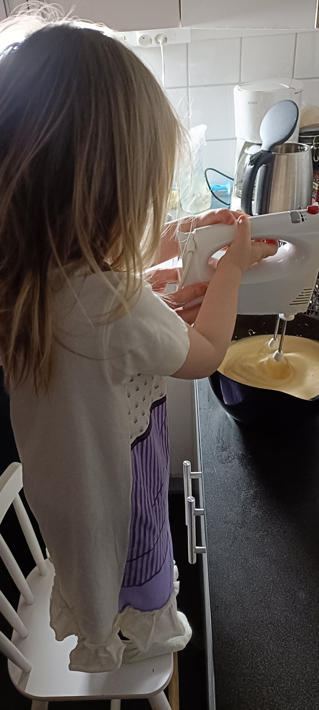

Tredagarskalas för vår lilla 3-åring!
Vilken helg vi har haft! Vår näst yngsta flicka fyllde 3 år i torsdags och det har varit firande i dagarna tre.
Torsdagen - Födelsedagen
Dagen började med att barnen badade i badkar, sedan en lugn frukost. Födelsedagsbarnet fick öppna sina första paket. Spännande med paket! Efter frukosten körde jag storasystrarna till skola och förskola, för att sedan träffa min fru och den minsta flickan i församlingshemmet. Där väntade en kopp kaffe, trevliga samtal, lite mackor och ytterligare två paket till vår 3-åring. Hon sprang runt och busade och skrattade i vanlig ordning.
Fredagen - Farfarsäventyr
På fredagen blev det långfärd med bilen. Efter att jag och mellansystrarna lämnat storasyster i skolan, styrde vi kosan mot Hässleholm för att hämta upp farfar. Vi tog en bit mat när klockan närmade sig lunchtid. Vi hann tillbaka precis lagom för att hämta storasyster från skolan. Barnen blev väldigt glada att få träffa sin farfar.
Lördagen - Storkalaset
Idag var det dags för det stora kalaset! Hela huset fylldes, 9 vuxna blev vi. Barnen blev väldigt glada att träffa dem som vanligt. En av mellanflickorna pyntade sin morfar med en krans.
Till lunch kokade jag ihop en rejäl gryta med nötfärs, vitkål, morot, lök och potatis som mättade gott. Till kaffet blev det en tjuvstart på en av sommarens bästa smaker, jordgubbstårta, med jordgubbar från Spanien! Åh vad det luktade gott. Nu längtar man till varmare tider.
Kalaset började klockan 12 och fortsatte ända till 16. Fyra timmar fyllda med gemenskap, härligt skumma utläggningar, mat. Vilken perfekt avslutning på en fantastisk födelsedagshelg för vår lilla 3-åring!
Nu har barnen somnat sedan en tid och det är sådär tråkigt lugnt och tyst i huset. Det är väl egentligen nu man ska passa på att sova, inte skriva blogginlägg. Ja, så får det nog bli. Tack för en fin dag.